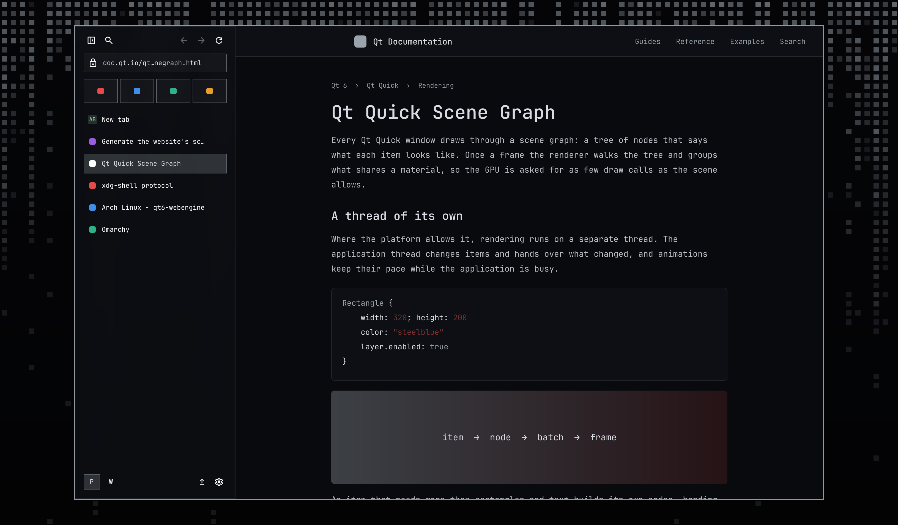
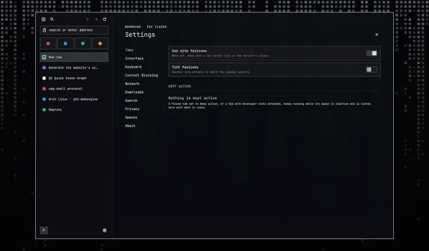
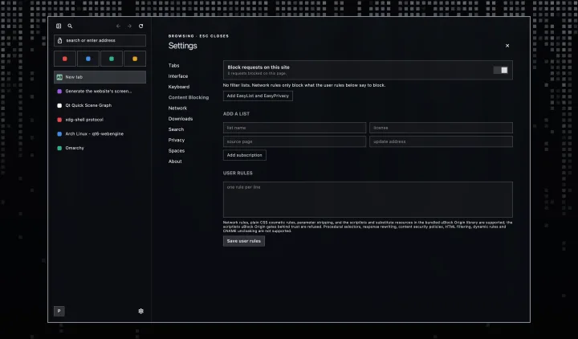
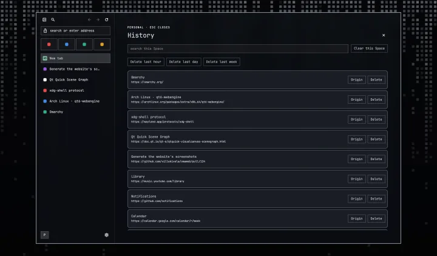
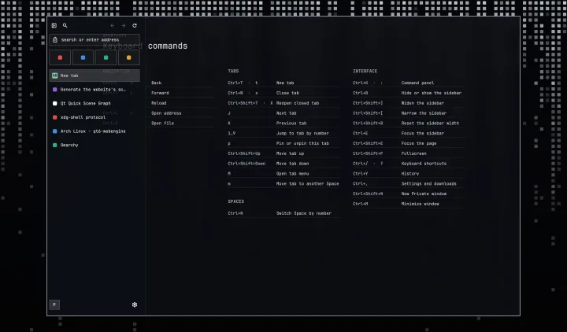

Browser for Omarchy
Desktop-native and keyboard-driven browser for Omarchy users who want browsing to fit into the system they already chose.
01 / the window itself
Omaweb takes its colours from the Omarchy theme you are running. Pick one to see the whole browser in it, wallpaper and all.





02 / yours to configure
The theme comes from omarchy theme set, and everything else is a file on
your machine.
Browser bindings and page-key rules live in keybindings.json. Rebind a
command, or give a conflicting key back to the page.
No browser account, telemetry or automatic crash upload. Omaweb keeps its browsing data on your machine.
03 / browsing identities
A Space keeps the browser data one part of your life leaves behind.
Each Space has its own cookies, logins, history, permissions and session. Work and personal accounts can stay open without another browser or a private window.
Pinned tabs return when a Space resumes. Mark one as Keep active to leave it running, then see which tab is active and how much memory it uses.
Omaweb is pre-alpha: Arch packaging and the final Wayland release checks are still in progress. The README lists what works today.
{kind=link}
{kind=link}
{kind=link}
{kind=link}
{kind=link}